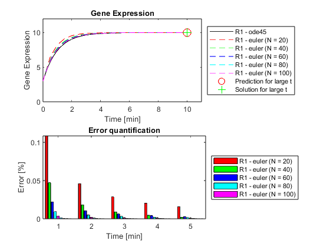

clear all
close all
load('p.mat', 'p')
time = [0 10];
y0 = [3];
[time, R1_ode] = ode45(@(t,initCond) model1(t,initCond,p), time, y0);
for i = 1:5
[R1_euler{i}, timeRange{i}] = euler_ode_solv(time, (i*20), y0, p);
end
for i = 1:5
for j = 1:10
idx_euler = find(timeRange{i} == j);
for m = 1:49
if time(m)> timeRange{i}(idx_euler)
error(i,j) = (R1_euler{i}(idx_euler) - ((R1_ode(m-1)+R1_ode(m))/2))/((R1_ode(m-1)+R1_ode(m))/2);
break
end
end
end
end
largeTimeRange = linspace(0,1000,5000);
[largeR_euler, largeTime] = euler_ode_solv(largeTimeRange, 1000, y0, p);
R1Eq = equilibriumCalc(1,y0,p);
figure(1)
subplot(2,1,1)
plot(time, R1_ode(:,1), "k-", ...
timeRange{1}, R1_euler{1}, 'r--', ...
timeRange{2}, R1_euler{2}, 'g--', ...
timeRange{3}, R1_euler{3}, 'b--', ...
timeRange{4}, R1_euler{4}, 'c--', ...
timeRange{5}, R1_euler{5}, 'm--')
hold on
plot(10, largeR_euler(end), "ro", MarkerSize=10)
plot(10, R1Eq, "g+", MarkerSize=10)
title('Gene Expression')
xlabel('Time [min]')
ylabel('Gene Expression')
xlim([0 11])
ylim([0 12])
legend('R1 - ode45', ...
'R1 - euler (N = 20)', ...
'R1 - euler (N = 40)', ...
'R1 - euler (N = 60)', ...
'R1 - euler (N = 80)', ...
'R1 - euler (N = 100)', ...
'Prediction for large t', ...
'Solution for large t', ...
'Location', 'eastoutside');
subplot(2,1,2)
bars = bar(error);
title('Error quantification')
xlabel('Time [min]')
ylabel('Error [%]')
legend('R1 - euler (N = 20)', ...
'R1 - euler (N = 40)', ...
'R1 - euler (N = 60)', ...
'R1 - euler (N = 80)', ...
'R1 - euler (N = 100)', ...
'Location', 'eastoutside')
colors = [1 0 0;
0 1 0;
0 0 1;
0 1 1;
1 0 1];
for i = 1:height(colors)
bars(i).FaceColor = colors(i,:);
end
